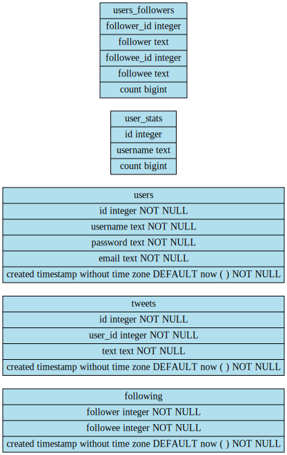

Introduction
We present Eden's and Jacob's NanoTwitter, a project for COSI 105b at Brandeis University (Spring 2015).
We set out to create a simplified version of Twitter that can withstand the test of scale. The purpose of the exercise was to demonstrate a variety of scaling techniques that were covered in the class - and put them into practice under controlled testing conditions in a live application.
We used the Sinatra Ruby web framework to handle the server component, with Postgres for persistence and Redis for caching.
AJAX technologies like Javascript and jQuery were used in the front end to ensure good user experience, and good user interface design guidelines were followed to make an intuitive product - such that anyone who uses Twitter can enjoy the basic feature set of NanoTwitter.
The name of the class is "Software Engineering and Architecture to Scale", and indeed - the major focus of this product was the ability to scale up and be capable of handling a large amount of simultaneous users. We used the load testing utility loader.io to provide reliable and consistent load testing data, effectively enabling us to run multiple tests following any change to the system, to see a change in responsiveness.
By validating performance changes to the system, we were able to effectively have an incremental approach to scaling.
All aspects of the application, its architecture, and its interface are given below.
Most importantly, the approaches we used for scaling, as well as their results, are given in detail here.
Product Overview
NanoTwitter is based on actual Twitter, a real time microblogging system and one of the most popular services in the world. It is a canonical example for streaming data at massive scales, and hence can be used as a basis for a product that's used for a scaling demonstration.
The NanoTwitter project guidelines included the following specifications:
- Users:
- Can register for accounts
- Have an email, password
- Can Register for accounts
- Can Tweet
- Interactions
- Users can follow each other
- Users can tweet and mention each other
- Users can unfollow each other
- Can see everyone else's tweet
- Can search for tweets
- Tweets
- Are 140 characters long
- Can include any special characters
- Have a date
- Have an author
Using the above specification, we managed to create a single page application, enabling the user to access all of the features without every navigating away from the page.
The following is the current screenshot of the application, when a user is not logged in:
As you can see, the "firehose" is displayed below an active search bar, enabling the user to search for any tweet in the system. By default, we display the top 100 most recent tweets.
The following is the current screenshot of the application, upon login:
As you can see, the "firehose" of the unlogged user is replaced by a "firehose" of the most recent tweets by the people that user is following.
Note in both cases, the bottom left is filled with other users of the service. The "all" tab is always populated, while the other tabs are populated upon login for obvious reasons (a non logged in user cannot follow or be followed)
Upon clicking on a user, the following box shows up:
Which shows the 100 most recent tweets by that person, and allows the user to follow or unfollow them.
API
Much like real Twitter, self respecting web services must have the ability to respond to request from other services. Almost all functionality of the application is available for other services to query from - with the exception of user authentication for obvious reasons.
The following are aspects of the API: - Tweets - /api/v1/tweet - A GET request at the endpoint enables you to get the most recent 100 tweets - A POST request at that tweet along with authentication data enables a user to post to that address - A GET to /search/:term endpoint lets you search for any term - Follow - /api/v1/follow - A GET /from/:id of the above endpoint shows all the follow relations of the person with that id - all the users that person is following. - A GET /to/:id of the above endpoint shows all the following relations of the person with that id - all the users that follow that person.
Benchmarking
We used the loader.io service for benchmarking the service. It is a service that works as follows:
- Given a URL endpoint, it fires a steady load of clients over the server in a given internal. Our default configuration was 500 clients over 1 minute.
- Upon loading the page, the client waits and then disconnects.
- The average response time is measured by the time from dispatch to response.
The standard benchmark for this application was the following:
100 most recent tweets (/api/v1/tweet)
Test Tweet Posting (/test_tweet)
- When visited causes test_user to post a random tweet
- User is random user
- Data is fake
Test Following (/test_follow) Selects a random user for test_user to follow that user
Home page (/)
Benchmarking is probably the most important aspect of the application, and so before we get to the exact configuration we will first cover our final benchmarks.
100 most recent tweets (/api/v1/tweet)
RESPONSE TIME: 261ms
ERROR RATE: 0.1%
Test Tweet Posting (/test_tweet)
RESPONSE TIME: 534ms
ERROR RATE: 0.3%
-
RESPONSE TIME: 260ms
ERROR RATE: 0.0%
-
RESPONSE TIME: 142ms
ERROR RATE: 0.1%
We are very happy with this benchmark, and owe it to a combination of hardware, software, and some other tricks.
We will cover all of our components here, and how they each contributed to this final result.
Hardware
For the sake of customization, we chose to move off of Heroku and switch to DigitalOcean, a VM provider with a full feature set. For fairness, we chose one with the following specifications: - 1GB RAM - Single Core CPU - 30GB SSD Disk The machine was accessible via SSH and was at a tier of $20 per month.
We did not go into an intensive comparison of the various cloud services due to a lack of resources - each provider costs money and trying out multiple would prove pricey. Alternatives such as Bluemix, EC2, and others are nontrivial to configure.
The important difference, however, is Heroku and Digital Ocean. We believe the two, although easy to compare via benchmarks, are not the same product.
Heroku is a platform, while DigitalOcean is a VM provider. With the former, we were not able to get access to the system, which enabled us to do things like configure a monolithic software stack (all services running on localhost), optimize thread count, and the like.
We defend our decision to go with DigitalOcean, even though this decision was not proved with benchmarks - unlike our software decisions.
Software
We used a simple software stack, each aspect of which we will cover:
- Sinatra Web Framework
- Thin Web Server
- Ubuntu Server 14.01
- Postgres 9.4
- Redis
Framework
Sinatra is a web framework for Ruby allowing simple and intuitive URL mapping. Its true advantage is that it stays out of your way, and enables a programmer to encode functionality without worrying about configuration.
We did not benchmark Sinatra, because this benchmark showed all the options to be relatively similar.
Server
Choosing a web server wasi the ultimate software decisions. Our options included the following:
- Unicorn
- Puma
- Thin
- Webrick
Mongrel was not tested. Several resources, such as this aided us in the decision, but ultimately we tried all four of the above under the same benchmark to see the results for our own eyes. Needless to say, an expert would be able to optimize all four to the highest degree - and we only used the defaults.
Hence we favored those that required less configuration, by the nature of our bias as non experts.
Benchmarking Servers
Under the default configuration for each, we ran the home page benchmark indicated above. We ruled that if they were very close, we would run more.
The home page benchmark is important because besides a bit of caching, it involves no actual database queries - only the serving of static files. To test the fundamental operations of a web server, this is ideal... as there are no other explanations for odd performance.
The results of this benchmark will surprise you - it surprised us a whole lot.
Unicorn
We ran the benchmarks for Unicorn using the following command:
unicorn -D
Which produced the following for the home page:
**RESPONSE TIME:** 502ms
**ERROR RATE:** 2.1%
Puma
We ran the benchmarks for Puma using the following command:
rackup -s puma -p 8080 --host 0.0.0.0 -D
Which produced the following for the home page:
**RESPONSE TIME:** 194ms
**ERROR RATE:** 1.8%
Puma beat unicorn, but had terrible perormence about 40 seconds in.
Webrick
We ran the benchmarks for Webrick using the following command:
rackup -s webrick -p 8080 --host 0.0.0.0 -D
Which produced the following for the home page:
**RESPONSE TIME:** 2695ms
**ERROR RATE:** 8.0%
Webrick is the default server for rails, and had by far the worst performance.
Thin
We ran the benchmarks for Thin using the following command:
thin start -p 8080 -d
Which produced the following for the home page:
**RESPONSE TIME:** 142ms
**ERROR RATE:** 0.1%
Thin won by a lot over all of the above.
A suprise result
Notice that out of the four servers benchmarked above - we thought Unicorn would certainly come out on top. However, it is clear that we were mistaken.
For the entirety of the development cycle, up until very close to this writing - we failed to consider Thin, the default server, as an option.
However, Thin won all the benchmarks by a landslide - leading us to consider it the best server for this project.
You are probably asking the same question we are - why did Thin win?
We have two possible hypotheses: - Thin, being a default server, is the minimum configuration for max performance - Thin is single threaded, and our DigitalOcean VM has a single core.
Although the former is possible, the latter is much more convincing. The main contender, Unicorn, utilizes a multi process architecture to optimize response. However, basic scheduling principles tell us that processes are high overhead entities which need to be context switched in and out of - incurring unneeded cost.
So Thin won in that it is light, and able to respond quickly without context switching. Sometimes simple is best!
Database
We used PostgreSQL as our database. We did not benchmark Postgres, because our extensive experience with it made up for any small speed benefits we could gain from using other programs.
However, a major decision we made was related to our use of DigitalOcean over Heroku. We decided to run Postgres on the localhost, eliminating all network latency and enabling us to get a response almost immediately after hitting disk.
By cutting out the network in running queries, we were able to achieve a "scale up" effect - in which we aggregated the services on one machine in order to save latency. However, at some point the one machine model fails - and many users require database replication.
We do not believe we reached a point when scaling out is necessary, and so preserving a monolith helped our speeds a lot.
We used Sequel, a Ruby database client, to interact with the server.
Our Schema was the following:

We placed indexes only on primary keys. The reason we did this is to optimize for an insert heavy workload, which we knew the database was going to bare.
The insert heavy workload stems from our extensive use of caching, which meant that we barely had to select any data from the database which was already selected - enabling us to optimize Postgres to put data in. Because of the overhead of each insertion with an index, eliminating indexes sped up our database a lot.
Materialized views were used in order to eliminate the amount of knowledge coming from the controller - all it needed to do was select from a table.
We did not choose to use an ORM like ActiveRecord for this assignment, as we feared bad query writing (abstraction of an ORM) will cost us. We instead took the risk and wrote queries by hand - which paid off big time as we could get fine tuned control over the database operation.
Caching
We used Redis, a key value store written in C, for caching.
The way we used it was as a pass through cache - by creating a module that took advantage of the yield ruby feature, we could lazily execute code if and only if the code did get executed and placed in our cache.
The pass through parameter was generally a SQL query.
We used Redis on localhost, which also improved performance (see above).
Because some queries were not up to date (all the tweets) we gave each key/value pair an expiration time of 10 seconds - an acceptable amount for a user to expect changes.
Ubuntu
We ran Ubuntu Server because we were familiar with it. We do not think it had an impact on performance.
Architecture
A standard Model-View-Controller architecture was followed, with Sinatra as the controller, the database with the schema shown as the model, and JavaScript in the front end as the view.
Other Optimizations
Minification
Minifying static assets is a well known technique to minimize size, and therefore network bandwidth. To a computer, minifying HTML does not reduce its ability to parse it. This is true for JavaScript as well - and CSS. We used the Google PageSpeed tools to verify this.
CDN
Content delivery networks (CDN) are massive distributed systems designed to deliver static web content from the places nearest to the user.
Rather than server static content ourselves, we chose to also use those CDN's - but not only for universal static assets such as jQuery and Boostrap, but for our own static Javascript and image assets.
We used GitHub pages to host all our static assets, which would then load as soon as the user received the index.html page from our server.
GitHub Pages which uses Fastly for their CDN blows everyone out of the water with their server response time, according to this post.
By serving these assets not from our server, we save bandwidth at the expense of GitHub, which has enough to spare.
Gzip
Rackup has a simple option to GZIP compress files. The advantage of compressing all requests and responses are known, because network transfers is much more expensive than decompression speed on the recipient.
Conclusion
Working on this project was a pleasure.
Give us a pull request if you want to contribute! Feel free to use our code with no credit to us on all future projects.